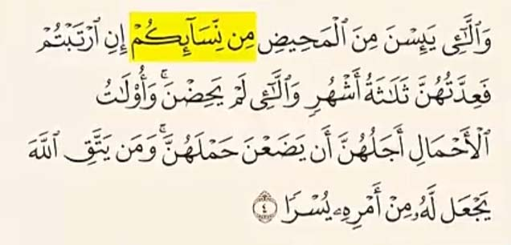
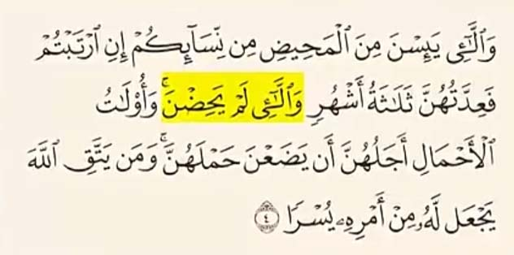

جواب
آیه 4 سوره طلاق درمورد عده زنانیه که طلاق گرفتن نه ازدواج با کودکان تو این آیه خداوند درباره دو دسته از زنان سخن میگه
دسته اول زنان یائسه ای که قائدگی شون به پایان رسیده
و زنانی که به دلایلی عادت ماهیانه نمیشن
و دسته دوم زنان باردار
در ابتدای این آیه عبارت مِن نِسائِکم اومده
این واژه در زبان عربی به طور اختصاصی برای زنان بالغ بکار میره نه کودکان خردسال
اگر هدف قرآن کودکان خردسال بود باید از واژه هایی مثل اطفال یا صبیه استفاده می کرد نساء همین نکته نشون میده که موضوع آیه هیچ ارتباطی به ازدواج با کودکان نداره
و عبارت وَالائِی لَم یَحِضنَ
یعنی زنانی که حیض نمیشن نه دختران خردسال
در علم پزشکی حالتی شناخته شده وجود داره به نام آمنوره
یعنی زنانی که قائدگی در اونها آغاز نمیشه یا بعد از مدتی متوقف میشه

این حالت دو نوع داره آمنوره اولیه یعنی زنانی که به بلوغ جسمی رسیدن اما به دلایل هورمونی یا مشکلات تخمدان هنوز عادت ماهیانه نشدن و آمنوره ثانویه در زنانی رخ میده که مدتی قاعدگی داشتن اما به دلایلی مثل استرس ، بیماری و یا شرایط دیگه قاعدگی شون قطع شده
طبق تحقیقات پزشکی حدود 5 تا 10 درصد از زنان در طول زندگی خود نوعی از آمنوره رو تجربه میکنن
بنابراین وقتی قرآن میگه زنانی که حیض نمیشن طبیعیه که منظور قرآن زنان بالغیه که دچار آمنوره اند نه دختربچه های نابالغ
برخی مفسران قدیم احتمال داده اند که این عبارت شامل دختر بچه نابالغ هم میشه اما این صرفا نظر مفسره نه معنای قطعی آیه
باید بین تفسیر انسان و متن قرآن فرق گذاشت قرآن کلام خداست و تفسیر برداشت انسانیه که ممکنه درست یا نادرست باشه
علاوه بر این خود قرآن در آیه 6 سوره نساء شرط ازدواج رو به روشنی بیان کرده خداوند میگه :
بلوغ جسمی و فکری برای ازدواج شرطه
و پیامبر می فرماید :
نکاح بدون رضایت دختر باطله
این نکته خیلی مهمه نظر یک فرد نابالغ ارزشی نداره چون نمیتونه تصمیم درست بگیره بنابراین وقتی پیامبر میگه :
رضایت دختر شرطه
به این معناست که دختر باید بالغ باشه تا اختیار تصمیم گیری برای ازدواج داشته باشد